Este santuario está disponible desde que llegas a la región de la torre de Tabanta, al sudoeste de dicha torre.
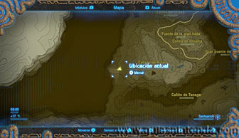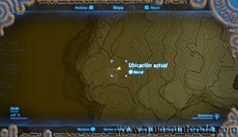
En ese lugar encontrarás una gran piedra plana en el suelo. Debes levantarla para localizar el santuario (puedes hacerlo fácilmente usando un globo de octorok). Después déjate caer por el agujero bajo la roca.
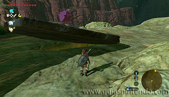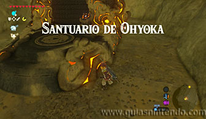
Nada más entrar en el santuario puedes encontrar un cofre que contiene una Hoja kolog. Te hará falta para poder avanzar en este santuario, así que hazle sitio en tu inventario y llévatela. De hecho, si la descartas y vuelves a entrar en el santuario, el cofre estará abierto y no podrás conseguirla, por lo tanto, o traes una de fuera o no podrás avanzar.
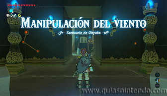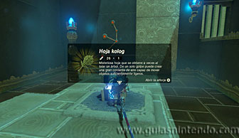
Ahora usa la hoja para mover el interruptor con forma de molinillo. Cuando este gire gracias al aire que has creado, la puerta se abrirá y deberás cruzar rápidamente antes de que se cierre.
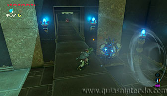
En la siguiente sala verás un barril explosivo sujeto por globos, pero no debes hacer nada con él. Sigue avanzando y llegarás a una sala donde hay tres miniguardianes en la parte inferior que podrás derrotar fácilmente con flechas.
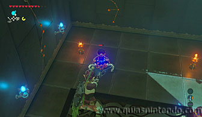
Después usa la hoja de kolog en otro interruptor molinillo. Aparecerá una plataforma en el aire sujeta por cuatro globos. Sube a ella y usa la hoja en los globos para hacer que avance. Si vas hacia delante encuentras el camino para avanzar (aunque antes puedes coger un cofre).
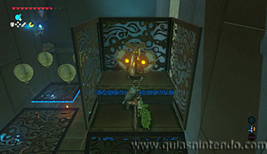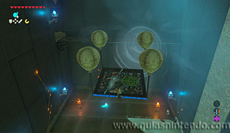
El cofre está escondido en el otro extremo de la sala, tendrías que hacer que se mueva hacia el lado contrario de la salida y allí verás el cofre que contiene una Rupia dorada (300 rupias). Después tendrás que volver a atravesar la sala para llegar a la puerta de salida.
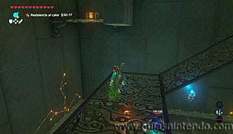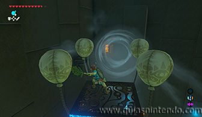
Sigue avanzando por el único camino posible hasta llegar a otro miniguardián que está junto a un gran bloque de piedra que se puede destruir. Usa bombas o una flecha explosiva para abrir el paso y poder continuar.
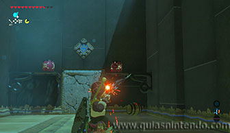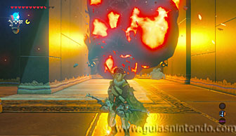
Ahora llegarás a un pedestal con un interruptor delante de ella. Si te pones encima y usas la hoja kolog, el pedestal se elevará bruscamente y te lanzará por los aires. A la izquierda verás un cofre (al que puedes llegar fácilmente planeando y contiene una espada del bosque). También podrás alcanzar el camino para continuar (por donde ves unas escaleras pegadas a una gran columna) que se ve a la derecha (tanto desde aquí, como desde otra plataforma que ves desde el cofre).
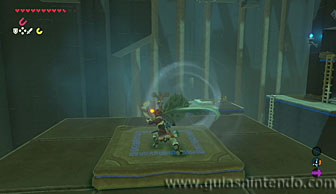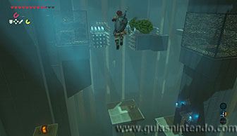
A continuación, debes destruir con una bomba el bloque que está dentro de la gran columna (lo ves subiendo las escaleras). Así liberarás una gran corriente de aire ascendente que debes usar para seguir subiendo.
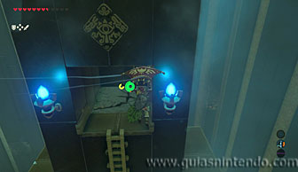
Ahora encontrarás otro interruptor molinillo que hará aparecer una plataforma con globos al hacerlo girar. Con ella podrás llegar hasta el cofre que se ve más atrás (y que contiene un gran núcleo ancestral). Después debes usar la misma plataforma para pasar entre los pinchos y alcanzar el otro extremo de la sala. Ve moviendo lentamente la plataforma usando la hoja, no cojas velocidad o irás contra los pinchos sin remedio.
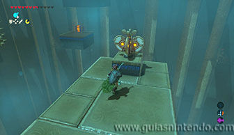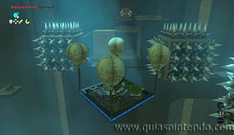
Avanza para llegar a otro interruptor molinillo y úsalo para subir todavía más arriba. Ahora podrás ver una gran columna de piedra en el centro de la sala. Tendrás que destruirla con una flecha explosiva.
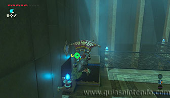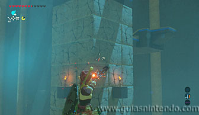
Después vuela hasta la corriente de aire que has liberado (tienes otro interruptor molinillo para elevarte y llegar sin problemas). Al elevarte por esa corriente llegarás hasta un cofre. En este caso contiene la llave del altar.
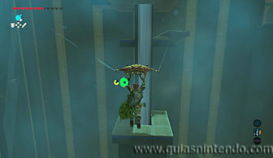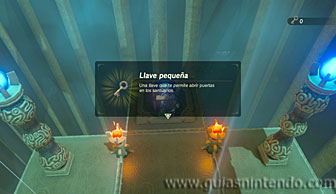
Ahora baja las escaleras que hay a la derecha del cofre y verás una serie de plataformas por donde puedes ir descendiendo con la paravela. En la última llegarás directamente a la puerta del altar (que ahora podrás abrir con la llave), aunque mientras caes verás el último cofre (contiene una lanza del rayo).
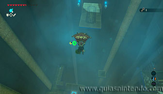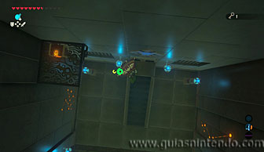
Al abrir la puerta del altar podrás conseguir el símbolo de valía correspondiente.
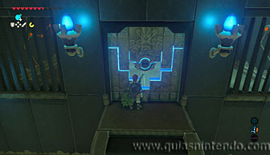